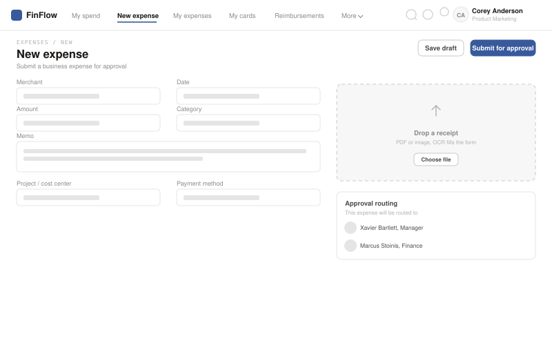
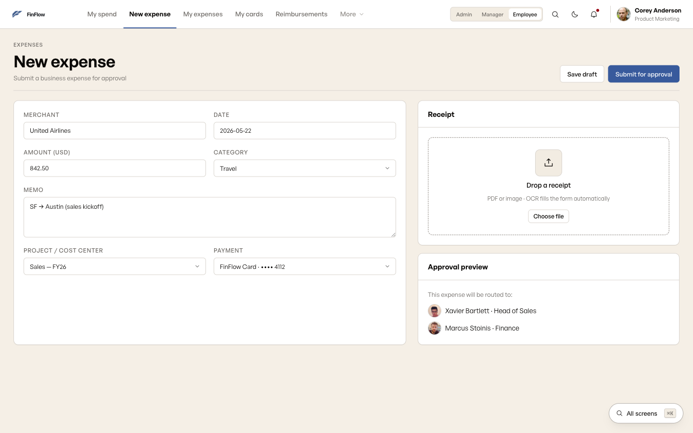
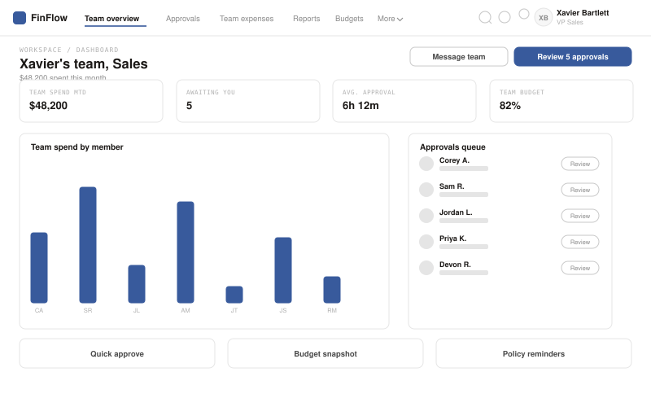
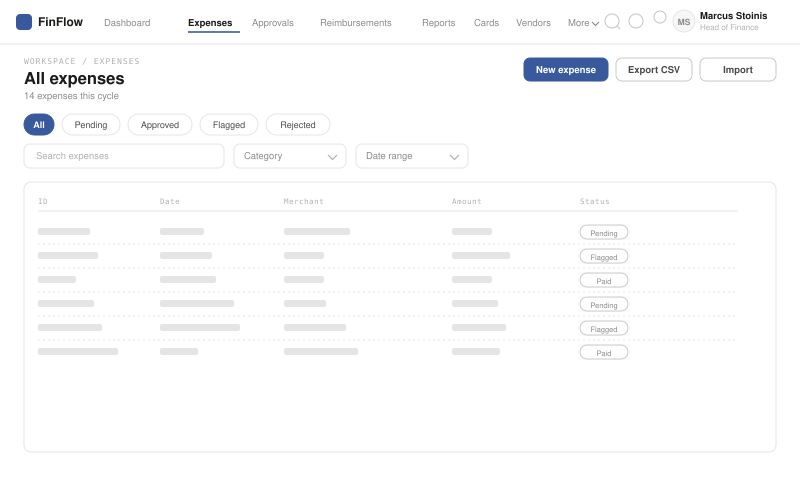
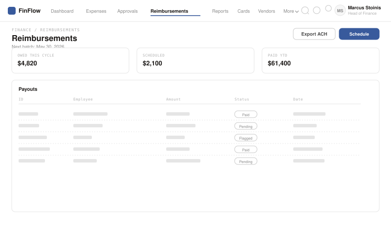

FinFlow: expense management that teams actually finish.
I designed this from research all the way through usability testing, for the admin, manager, and employee roles, and the task completion numbers moved because of it.
It's a role-aware expense workspace built for Reyonal: 47 screens across 3 roles, WCAG 2.1 AA accessible, built on a design system I built from scratch for this product.
73% → 89% is a real internal number measured post-launch by the client, not a study I ran myself. Company name and screens are anonymized under NDA; the flows and numbers are unchanged.
Three roles. One broken tool. Nobody could finish their task.
Employees got stuck in category dropdowns and gave up halfway through submitting. Managers had no team context when approving, so approvals just sat there. Admins couldn't see spend or compliance in one place, which turned month-end into a manual scramble every single time.
The usability tests backed up what people told us in interviews: the tool worked fine on paper, but nobody could actually use it day to day. It wasn't missing features. The way the tasks were structured was the real problem.
What users told us before a single screen was drawn.
I ran 12 interviews over 4 weeks, built around three personas: Corey (employee), Xavier (manager), and Marcus (Head of Finance, the primary one). Three patterns kept showing up, and they shaped basically every decision after that.
Submission happens at the moment of purchase
Corey wanted to submit an expense right after buying something, not days later back at his desk. The old tool had no real mobile capture, so receipts got lost and submissions kept piling up.
Managers approve blindly
Xavier's approval queue gave him nothing to go on: no team totals, no budget headroom, no policy flags. So he'd either approve everything without really checking, or hold things up asking for more info.
Admins do month-end manually
Marcus was closing the month with four different tools plus a spreadsheet. Just chasing down receipts ate up 6+ hours every cycle, because there was no real reconciliation, just a raw transaction list.
Six decisions the journey map forced.
I mapped each role's own end-to-end journey, Corey submitting an expense, Xavier clearing his approval queue, Marcus closing the month, and found the moments in each where the old tool made someone's day harder. Every decision below comes straight from one of those moments.
A confidence chip, not blind OCR
The old tool auto-filled receipt data and gave you no way to know if it was even right. Corey put it best: "will the OCR get the amount right? Last tool got it wrong." FinFlow shows a confidence score right on the field, and fixing it is one tap, not starting the whole form over.
Smart categories, not memorized codes
The old tool expected Corey to remember a project code off the top of his head, standing at a register. FinFlow suggests the category and project based on recent activity instead, recognizing over recalling, right when his hands are full.
Policy flags do the triage for Xavier
Xavier's real complaint was simple: he couldn't tell which items in his queue were fine and which weren't. A policy chip on every row fixes that. He can bulk-approve everything in-policy without a second thought, and put his attention on the one flagged item.
Audit log promoted to top-level nav
This one started buried three levels deep inside Settings. Round-2 testing showed nobody could find it: only 50% of people managed to complete "find the audit log." Moving it to a top-level nav item brought that up to 92%.
Card issuance lives inside FinFlow
Marcus used to issue virtual cards through a separate vendor portal, another login, another system to reconcile at month-end. In FinFlow, the card is just part of the platform. You issue it, set a limit, and watch the balance without ever leaving the app.
One accent color, spent deliberately
Slate blue only shows up for primary actions and policy flags. Nothing else on the screen competes for that attention. The hierarchy comes from contrast and spacing, not from painting brand color on every surface.
The audit log used to be buried three levels deep.
This is the actual information architecture from round 2, not a cleaned-up mockup. The highlighted screens were originally tucked inside Settings, right where finance admins never went looking for them.

No sidebar. Each role gets its own top nav, capped at 5 to 7 items, everything else reachable through search. But the first version buried Audit log, Approvals, and the role-aware Dashboard landing inside a generic Settings menu, because that's usually where anything that "feels like configuration" ends up.
Convention beat the actual task
Finance admins are in the audit log all the time: closing the month, disputing a flagged transaction, prepping for a SOC 2 review. It's a primary workspace, not a setting. Filing it under Settings looked tidy on a sitemap, but it had nothing to do with how often Marcus actually used it.
Round-2 testing put a number on it: only 50% of people could complete "find the audit log." Once it became a top-level, role-visible nav item, no nesting, no extra click, that jumped to 92%. That one finding flattened the whole IA, not just this one item.
From lo-fi to final: the new expense flow.
The new expense flow is the clearest example of how this evolved. The two-column layout, form on the left and receipt on the right, was decided at wireframe stage and stayed exactly that way through to final.

Top nav, a two-column form, and an approval-routing preview in the right panel, so whoever's submitting can see exactly who's going to review it before they hit submit.

Same structure, now with the visual system applied: cold neutral base, slate blue accent, the virtual card rendered as a real object on screen. Nothing about the layout changed, because the wireframe already got it right.
Every numbered dot traces back to a friction point.
The manager and employee views carry the most research behind them. Below, each annotation points to the specific finding that shaped it.

"Awaiting you" replaces a generic inbox count. This ties back to insight 02, managers approving without context. Calling it a personal queue instead of a company stat makes it feel like Xavier's actual to-do list, not just another report.
Flagged sits in the row, not a separate report. This is decision 03, policy flags doing the triage work. Xavier can see the Marriott charge is over the lodging cap without opening it or checking a policy doc.
Spend by member, not just spend by team. A team total on its own hides who's actually driving the spend. Breaking it out by member lets Xavier spot the one outlier without exporting anything.

Upload receipt sits beside New expense, not inside it. This is insight 01, submission happening right at the point of purchase. Corey can grab the receipt the second he has it, before he's even figured out how to categorize the spend.
The virtual card is a real object, not a settings row. Decision 05 again, card issuance used to sit in a separate vendor portal. Seeing the masked number and live balance right here makes the spend limit feel real instead of abstract.
Status is visible without opening the row. Approved, rejected, and the reason why (like needing CMO sign-off) are all readable at a glance. Corey doesn't have to open an expense just to check its status.
One design system. Five screens.
The same component primitives, tables, filters, status chips, approval actions, get adapted to whatever each role actually needs to do. Keeping it consistent across roles meant people didn't have to relearn the product every time they switched context.


Audited, not assumed.
That "AA WCAG 2.1" tag up in the hero isn't just a claim, it's something I actually checked. I sampled every foreground and background pair against AA and AAA thresholds, checked focus order against the visual reading order, and tested keyboard-only navigation end to end.

"We didn't just polish the screens. We changed how the tasks were structured, so people could finish faster, make fewer mistakes, and feel less drained doing it. Then we actually measured that."
Design outcome · real internal result
One system, three roles, measurable improvement.
The final design brought admin, manager, and employee together into one consistent platform, with dashboards built for each role but sharing the same component primitives underneath. Task completion on the core expense workflows went from 73% to 89%, a real internal number measured after launch, not something I ran myself. Error rate and time-to-complete both dropped across every flow we tested.
What I'd do differently.
I'd test the mobile snap-receipt flow a lot earlier. It got sketched in round one, then got pushed down the list during wireframing, which is backwards, since it's the most common way people actually submit an expense.
The three dashboards share components, but I designed them one after another instead of side by side. Doing them in parallel from the start would've surfaced the shared layout decisions sooner and saved some rework.
Task completion rate was the right thing to measure, but I'd add time-on-task from the very first usability round, not just the last one. For a tool people use every day, speed matters just as much as whether they finish.
Full process archive: personas, journey map, sketch notes, and wireframes
Three roles, three workdays.
12 interviews over 4 weeks, built around one primary persona, Marcus in Finance, supported by two secondary personas who hand work off to him.

Where time and trust were lost.
Three separate journeys, one per role: Corey submitting a $42.80 coffee expense, Xavier clearing eight approvals on a Monday, Marcus closing the month for the board. Each stage is mapped before and after, with the friction that drove a decision called out directly.

Paper first. Before committing to anything.
Sketching on paper let me test structure before pixel polish got in the way. Each one answered a specific question about the task flow before I moved anything to digital.
Mobile-first home screen
Made "Snap receipt" the primary action, because the research was clear: most submissions happen right at the point of purchase, not later at a desk. The home screen had to work for that moment specifically.
Split-screen sign-in
Brand messaging on the left ("The whole company's spend, in flow.") keeps SSO sign-in from feeling cold and purely transactional. New users get a sense of the product before they've even logged in.
Two-column expense form
Form fields on the left, receipt drop zone on the right, so people can fill in the details and upload the receipt at the same time. The old tool made you do it step by step, and that's exactly where people dropped off.
Inline approvals queue
A row-based list with Approve/Reject right on each row, so managers can clear a whole queue without opening a single submission. This matches what managers actually do: move fast through a backlog, not review one expense at a time.
Digital wireframes. Decisions locked in.
Going from sketch to lo-fi is where the task structure actually gets tested. Each wireframe had to answer one question: does this layout let people finish their main task without getting confused?



Real tradeoffs, on the record.
The dashboard and approvals screens carried the most risk, so I documented the actual decision for each: the options I weighed, why one won, and what it was supposed to fix. Nothing here is a mockup, it's the reasoning that led to one.

A small system, fully spent.
A slate blue accent on top of a cold neutral graphite scale, two typefaces, and a four-step spacing scale. Every screen in FinFlow comes from this one sheet, no one-off styles past round 2.

Clickable, not a Figma flow.
Real screen-to-screen navigation across all three role dashboards, expenses, approvals, cards, and reports. Try the bulk-approve flow in Approvals, or hit ⌘K to jump straight to any of the 47 screens.